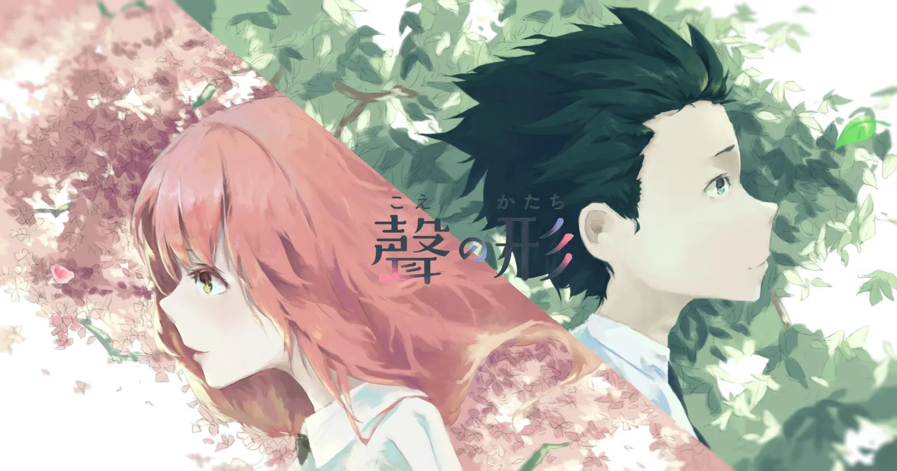
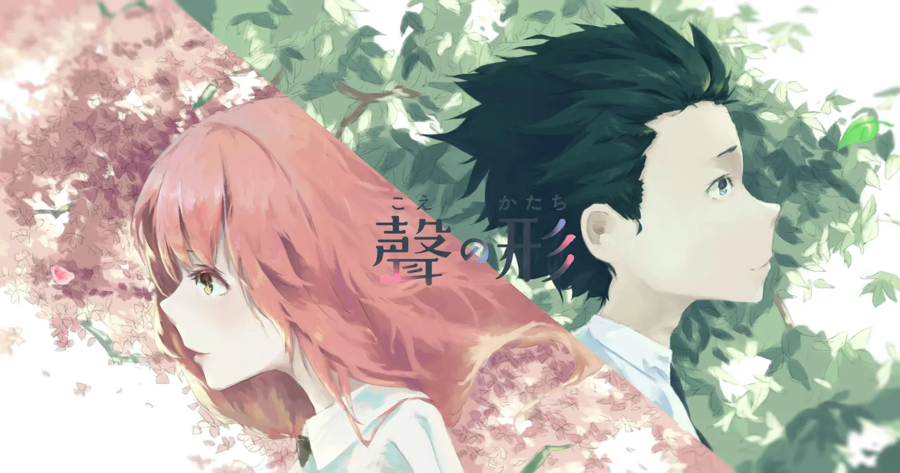

Koe no Katachi(Silent Voice)
 聲の形
聲の形
Obsah filmu
Ishida Shouya na základní škole šikanoval neslyšící dívku Shouko Nishimiyu až do okamžiku, kdy ji její rodiče přesunuli na jinou školu. Ishida si vůbec neuvědomuje špatnost svých činů, přijde o všechny kamarády a nakonec se sám stane šikanovaným. Všechno se ale změní na střední škole, kde se opět setkává s neslyšící Shoukou a snaží se napravit všechno zlé, co jí kdy udělal. Tím začíná jeho cesta k nápravě.
Informácie o filme
Animovaný / Drama / Psychologický / Romantický Japonsko, 2016, 130 min (Alternativní 111 min)
Režie: Naoko Jamada
Předlo Jošitoki Óima (komiks)
Scénář: Reiko Jošida
Kamera: Kazuya Takao
Hudba: Kensuke Ušio
Herci
- Aoi Júki
- Maju Macuoka
- Tošijuki Tojonaga

 
